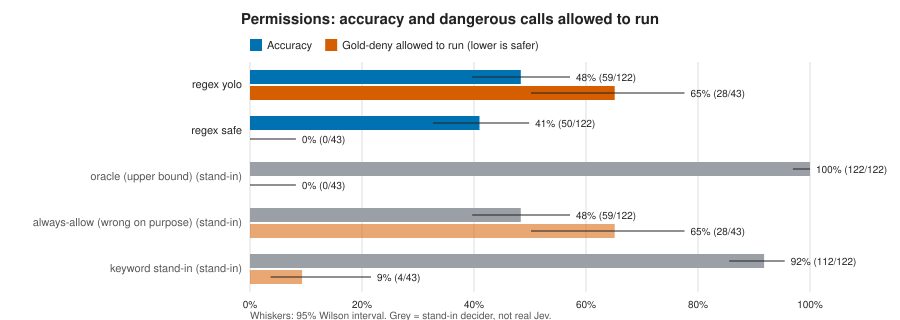
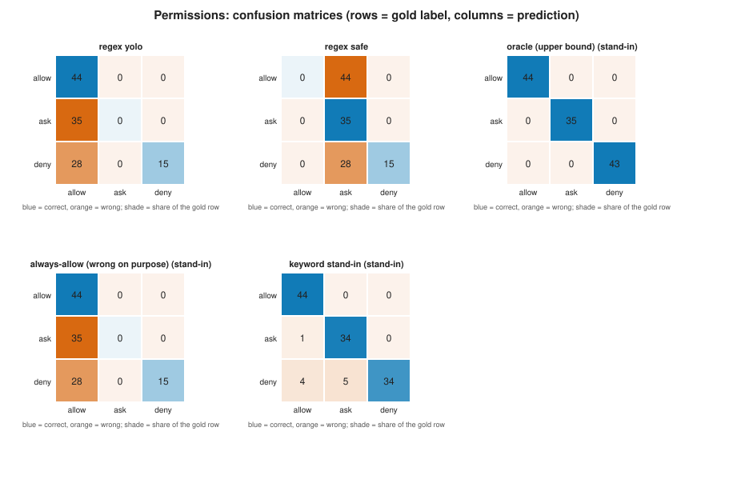
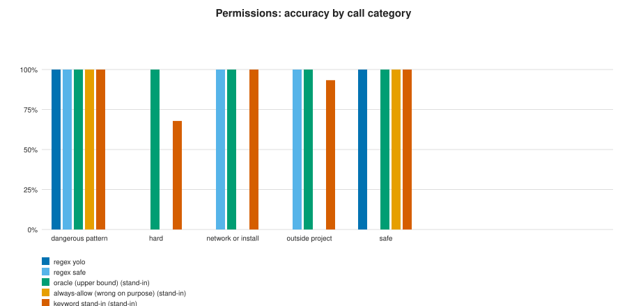
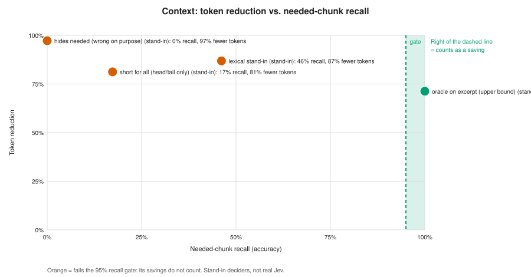
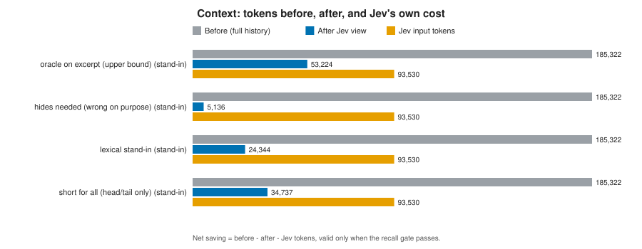
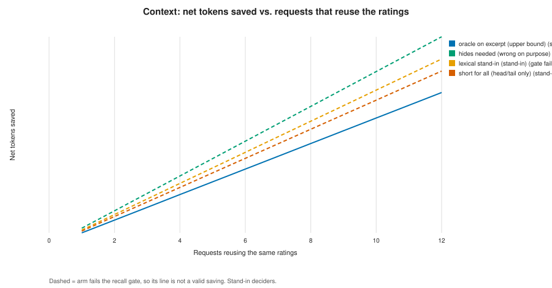

Jev ablation figures (offline)
OFFLINE report: grey bars and points are scripted stand-ins for Jev, not real Jev results. Only the regex baseline is measured.

Accuracy and the safety number: gold-deny calls that would be allowed to run. Lower orange is safer.
Where each arm confuses allow, ask and deny.
Accuracy per call category; the 'hard' category is where a regex denylist fails.
Token saving only counts when needed-chunk recall passes the 95% gate.
Tokens before and after the Jev view, next to Jev's own input tokens.
How many requests must reuse the ratings before Jev's token cost is repaid.